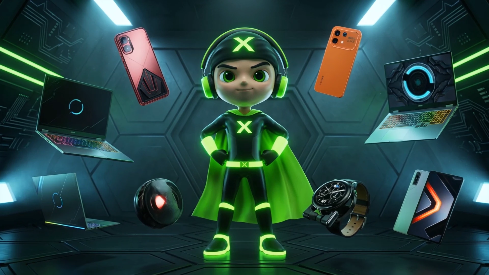

04 / AI VIDEO CAMPAIGN
Infinix
X-Boy
AI video production & character storytelling
A three-video AI-led series built around X-Boy, connecting the character with Infinix product stories across the X-Boy ecosystem, XPad and HOT 70 with IP65 protection.
AI VideoCharacter StorytellingPrompt Development

PROJECT OVERVIEWOne character.
One character.
Three product stories.
The X-Boy project uses a recurring character as the anchor for a short series of AI-assisted videos. The three clips cover the X-Boy ecosystem, XPad and HOT 70 IP65.
CREATIVE APPROACH
AI-led character storytelling, prompt development and product-focused visual direction across three connected video outputs.
01 / THE VIDEO SERIESX-Boy in
X-Boy in
three chapters.
The supplied cover image introduces the project, followed by the three videos in their original numbered order. Each video loops continuously.